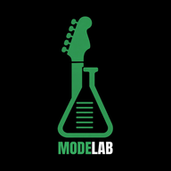

MODE LAB
3D Tab Player
Preview
Instrument
Les Paul
Acoustic
Bass
Load GP / MusicXML
Track
Key centre
Mode
Tuning
Capo
Picking
Standard
All downstrokes (metal)
Shape
Any (engine picks)
Shape 1
Shape 2
Shape 3
⏮
▶ Play
■
⟲ Audience view
•
◷ Silent preview
Finger numbers
Quality
Auto
High
Low (iPad/phone)
Speed
0.5
0.75
1
Loading…
Loading 3D hand…
—
T thumb (behind neck)
1 index
2 middle
3 ring
4 pinky
0 open